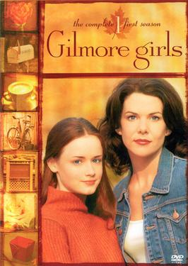
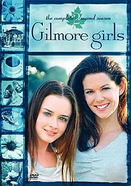
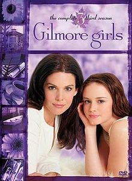
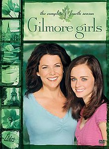
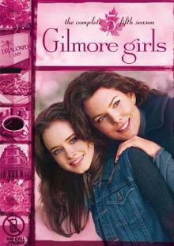
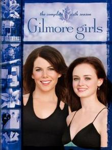
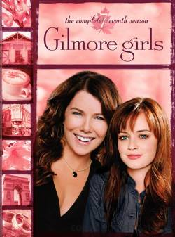

-

Season 1
Rory is accepted to Chilton, a private school that would get her to her lifelong dream to study at Harvard. Because of the heavy price tag the private school comes with, Lorelai talks to her wealthy parents, with whom she has not communicated for a long time. Emily and Richard agree to pay for the tuition, although there is a catch; that Lorelai and Rory would have Friday night dinners with them. Rory has a difficult time settling in at Chilton, struggling to match the demands of private school and attracting the fury of classmate Paris Geller, her academic rival. She meets her first boyfriend, Dean, but the pair break up when Rory doesn't reciprocate his "I love you", instead of saying "thank you". After being romantically pursued by Rory's teacher, Max Medina, Lorelai decides with a conflicted heart to give the relationship a chance. This dynamic creates some tension between Lorelai and Rory. At the same time, Lorelai harbors a close friendship with local diner owner Luke Danes, and several people comment on their mutual attraction—but Lorelai is in denial and Luke does not act on it. Rory's father, Christopher Hayden, returns and also wants to be with Lorelai but she tells him he is too immature for family life. All the while, Lorelai struggles to adjust to having her parents in her life on a regular basis. Emily and Richard enjoy developing a relationship with their granddaughter, but also realize how much they have missed. The season ends with Rory reuniting with Dean, and Max proposing to Lorelai.
-

Season 2
Lorelai accepts Max's proposal but realizes shortly before the wedding that it does not feel right and they break up. She and Sookie get excited about opening their own business at the dilapidated Dragonfly Inn but the owner refuses to sell. Sookie gets engaged to Jackson Belleville, a local farmer. Luke's teenage nephew, Jess Mariano, comes to live under his care. Jess is sullen and angry with everyone apart from Rory. The two strike up a friendship, causing jealousy from Dean. Lorelai is disapproving of their closeness, labeling Jess as a bad influence, especially when they are in a car accident which leads to a blow-up with Luke. Richard announces that he has retired but soon becomes bored and sets up his own insurance company. Christopher appears to have his life together and Lorelai decides to reunite with him. But at Sookie's wedding, Christopher learns that his recently estranged fiancée is pregnant and decides to return to her, leaving Lorelai heartbroken. Meanwhile, Rory impulsively kisses Jess.
-

Season 3
Rory's attraction to Jess grows stronger but Jess doesn't show affection or knowledge that it is, and she gets jealous when he teases her with a new girlfriend. Dean cannot ignore what is going on and eventually ends their relationship. Rory and Jess immediately become a couple. Meanwhile, she and Paris spend the year as Student Body Presidents at Chilton and both submit applications to Harvard University. Paris is devastated when she does not get in. Rory is accepted but decides to attend Yale University instead, much to Emily and Richard's delight. The Independence Inn is badly damaged in a fire, but Lorelai and Sookie are able to buy the Dragonfly when its elderly owner dies. Jess pressures Rory to have sex with him, which leads to a fight between Dean and Jess. Luke begins dating a lawyer named Nicole. Lane Kim, Rory's best friend, starts a band called Hep Alien and tries to convince her strict mother to let her date the guitarist, Dave while keeping the band secret. As the season ends, Jess abruptly leaves Stars Hollow to track down his estranged father in California, and Rory graduates high school as valedictorian.
-

Season 4
Rory starts her college education at Yale, with Paris – now a friend – as her roommate. Both start working for the Yale Daily News. Rory is surprised when Dean quickly marries his new girlfriend Lindsey. The pair grow closer again over the season, leading Rory to turn down Jess when he returns and declares his love. Lorelai spends the season renovating the Dragonfly Inn in preparation for its opening, along with Sookie and their colleague Michel. She also begins a relationship with Richard's new business partner, Jason Stiles, which she keeps secret from her parents. Lane's mother learns about Hep Alien and throws her out of the house. Sookie and Jackson have a son. Lorelai and Jason break up after Jason sues Richard for leaving their partnership and Lorelai sides with her father. Emily feels neglected by Richard and the two separate, with Richard moving into the pool house. Luke and Nicole elope during a cruise, but quickly decide to divorce. Towards the end of the season, Luke accepts that he is in love with Lorelai and begins wooing her. The pair finally kiss on the Dragonfly's opening night, while Rory loses her virginity to a married Dean.
-

Season 5
Rory embarks on a European trip with Emily and seldom speaks with Lorelai. When she returns, she reunites with her mother after apologizing for her affair with Dean. Rory attempts to progress her relationship with Dean after he separated from his wife when she found out about the affair, but it soon ends when he realizes how different their lives are. She falls for Logan Huntzberger, a wealthy playboy Yale student whose parents think she is beneath. Lane starts a relationship with her bandmate Zack and Paris starts a relationship with Yale Daily News editor Doyle. Sookie gives birth to her daughter, Martha. Lorelai and Luke start a relationship. Emily and Richard – who reunite and renew their wedding vows – disapprove and Emily interferes by telling Christopher to try to win her back. Christopher shows up at Emily and Richard's vow renewal professing his love for Lorelai, which overwhelms Luke, resulting in a brief separation between him and Lorelai and a major argument between Lorelai and Emily. Rory gets an internship at Logan's father's newspaper but is deflated when he tells her she "doesn't have it." Rory lashes out due to this and she and Logan are arrested for stealing a yacht, after which Rory announces that she is quitting Yale and moves in with her grandparents at their pool house. When Lorelai sees how supportive Luke is over the situation, she asks him to marry her.
-

Season 6
Lorelai is devastated by Rory's actions but insists that she cannot force her back to Yale: it is a decision Rory must make for herself. Mother and daughter do not speak for six months. Rory has to complete community service and Emily gets her a job with the DAR. Richard becomes concerned but eventually, after encouragement from Jess, Rory returns to Yale and reunites with Lorelai. She replaces Paris as editor of the Yale Daily News, which causes issues in their friendship, and after a short separation from Logan, the relationship gets serious. Rory is crushed when Logan's father sends him to work in London. Hep Alien disband then come back together; Lane and Zack get married. Lorelai plans a wedding with Luke, but things get difficult when Luke learns that he has a 12-year-old daughter named April. He starts building a relationship with her but keeps Lorelai separate. Lorelai tries to accept this but eventually snaps and issues him an ultimatum. When he does not agree to elope, Lorelai goes to Christopher for comfort.
-

Season 7
Lorelai and Luke officially split when she tells him she slept with Christopher. Before much time has passed, Christopher convinces Lorelai to try a relationship. Christopher receives a letter from Sherry Tinsdale, who is Christopher's ex-girlfriend and the mother of his second child, Georgia. The letter states she wants to be a part of Georgia's life again and requests that she spend time with her in Paris. Lorelai and Christopher decide to go with Georgia to get her settled. The pair spontaneously marry during the trip to Paris. Luke has a custody battle over April after her mother moves them to New Mexico, and he asks Lorelai to write him a character reference. Luke ends up winning the right to see April during the holidays. Christopher finds what Lorelai wrote about Luke and is upset. Lorelai and Christopher accept that they are not right together and they divorce, though the divorce is never shown or mentioned subsequently. Lane and Zack have twins, and Sookie becomes pregnant again. Rory completes her final year of college. She and Logan spend half the season in a long-distance relationship until he eventually moves back to New York. He proposes, but Rory says that she wants to keep her options open, which leads to their separation. She panics about what she will do after graduating; following some rejection, she gets a job reporting on the Barack Obama campaign trail. Stars Hollow throws a surprise farewell party for Rory. When Lorelai finds out that Luke organized it, the pair reconcile with a kiss. Lorelai promises Emily that she will continue attending Friday night dinners. Before Lorelai and Rory have to say goodbye, they have one last breakfast at Luke's Diner.
 HOME
SEASONS
CAST
PRODUCTION
RECEPTION
SOURCES
HOME
SEASONS
CAST
PRODUCTION
RECEPTION
SOURCES